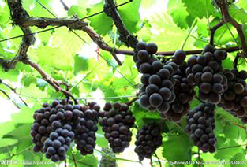

About Us
Yongzhou Shangshui Eco-Agriculture Development Co., Ltd was established in August 2011 and located in Lengshuitan District of Yongzhou City with registered capital three million Yuan. Our company employs 218 people with 18 professional and technical personnels.
The company majors in producing, processing and marketing organic vegetables and developing eco-tourism. We are planning to build an organic vegetables garden-Banyuehu Village which occupies ten thousand Mu. It is located by the bank of Xiang rive. With convenient transportation, supporting facilities of irrigation and water conservancy and excellent environment, it is unique advantage of developing organic vegetables, fruits, woods and farming. We are devoted to build a new modern farm combining producing, processing, marketing, relaxing, sightseeing and tourism. We are aimed to be the organic vegetables supply base of Guangdong, Hongkong and Mocau. It is a window to display the development of Yongzhou new-and-hightech Agriculture.

-

We provide you the best products
-

We provide you the best products
-

We provide you the best products
Products

Fragrant Orange
Fragrant Orange including clear see, spring, love, gentle, and other high-quality varieties, flavor is very good, quality excellent new citrus varieties, and the rich characteristic, good characteristic, cacommon characteristics are thin easy to peel, water enough.

Fragrant Ginger
Fragrant ginger is yongzhou famous specialty, is one of the script characteristic agricultural products "yun yong spiced" scent, as well as fresh food, and can be preserved and processing, diaphoresis, warm stomach, flooding wind chill, detoxification sterilization function.

Fragrant Grape
Perfume grapes are we introduce a new grape varieties, formerly known as sweet grapes, belongs to Europe and the United States hybrids, by shenyang rose fragrant buds as the female parent, violet perfume bud into a male parent hybridization breeding.

Fragrant Taro
Jiang Yongxiang Fragrant taro meat quality is exquisite, has the special flavor. Bigger at the same time, taro flesh white, soft, fine quality. Open taro visible taro meat is full of tiny red bar, similar betelnut pattern.

Shawo Radish
ShaWo Radish, also known as tianjin wei ch 'ing radish, commonly known as "pear", is tianjin agriculture brand-name products. For originating in tianjin xiqing district xin county small ShaWo, bi village, such as the surrounding villages.

Fragrant Grapefruit
Jiang Yongxiang taro meat quality is exquisite, has the special flavor. Bigger at the same time, taro flesh white, soft, fine quality. Open taro visible taro meat is full of tiny red bar,tiny red,tiny red similar betelnut pattern.
Address
Next to No.8 Middle School,
Cuizhu Road, Lengshuitan District,
Yongzhou City
Phone :00 86 746-8338836
E-mail :377678610@qq.com